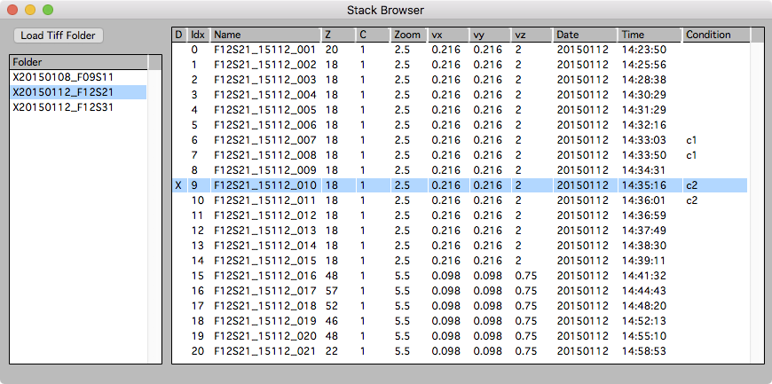
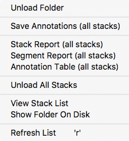
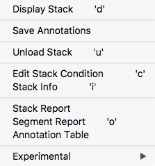
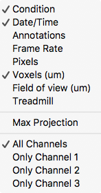

Stack Browser

The stack browser is the main starting point for using Map Manager. The stack browser provides an interface to load and browse folders of Tiff stacks.
Open the stack browser from the main menu ‘MapManager → Stack Browser’.
The list on the left is a list of loaded folders. Select a folder (on the left) and the list on the right will show the individual stacks within that folder. The stack list can be sorted by clicking on the column headers. The columns to display in the stack list can be set with a right-click on the column headers.
To display a stack:
- Double-click a stack
- Right-click the stack and select ‘Display Stack’
- Select the stack and use keyboard d for ‘D’isplay.
Loading stacks
Load Tiff Folder
Load a folder of single channel Tiff files from hard-drive. If these Tiff files have been converted with one of the Map Manager Fiji plugins, the voxel size, date, and time should be correctly set.
Drag and drop
A simple way to load a single stack is to drag and drop a Tiff file onto the Igor program icon. Stacks opened with drag-and-drop will appear in a special folder named ‘DragAndDrop’.
Displaying stacks
Select a folder on the left and the stacks in that folder will be shown on the right. The order of stacks can be sorted by selecting columns in the stack list. To sort by date, select ‘Date’ in the columns header. This ordering is critical when batch importing a list of stacks into a Map Manager time-series.
Display a stack:
- Double-click a stack
- Right-click the stack and select ‘Display Stack’
- Select the stack and use keyboard d for ‘D’isplay.
Unload a stack:
Once a stack is loaded and displayed in a stack window, it will remain loaded, even after the stack window is closed. Loaded stacks are indicated in the stack browser with an ‘X’ in the first column. To unload a stack, select it in the Stack Browser and use keyboard u or right-click and select ‘Unload Stack’.
Right-click a folder for a context menu
Right-click a folder in the list on the left for a context menu that allows actions to be performed on all stacks in the folder.

-
Unload Folder. Unload the folder and all its stacks.
-
Save Annotations (all stacks). Save the annotations for all ‘dirty’ stacks in a folder. Dirty stacks are stacks that have been changed or modified since they were loaded. Dirty stacks are noted in the stack list with a red background in the ‘D’ column.
-
Stack Report (all stacks). Generate a stack report for all stacks.
-
Segment Report (all stacks). Generate a segment report for all stacks.
-
Annotation Table (all stacks). Generate a table with all annotations for all stacks. This can be copied and pasted into other programs for analysis.
-
Unload all stacks. Unload the raw image data for all stacks in the list.
-
View Stack List. Display the list of stacks as a table. This is useful to copy/paste to another program for analysis.
-
Show Folder On Disk. Open the hard-drive folder the folder was originally loaded from. This opens a Finder window on OSX and an Explorer window on Microsoft Windows.
-
Refresh List. To refresh the list of folders and the selected folder’s list of stacks. This is generally not needed but can be useful to ensure stacks that have had their annotations edited (e.g. ‘dirty’ stacks) are show in red in their ‘D’ column.
Right-click a stack for a context menu

Right-click a stack to open a context menu. These menu items can also be performed using the indicated keyboard shortcuts.
-
Display Stack. Open a stack window. Same as double-click.
-
Save Annotations. Save stack annotations.
-
Unload Stack. Unload the raw data for a stack. Important, this unloads the raw data to conserve memory, it DOES NOT unload the stack annotations.
-
Edit Stack Condition. Edit the stack condition for the selected stack. The stack condition can also be edited with keyboard c. Stack conditions can be displayed in the stack list by right-clicking on the column headers and selecting ‘Condition’.
-
Stack Info. Open a stack info panel to view acquisition parameters for a stack. Use keyboard shift+i (that is ‘i’ as in Info) to views all acquisition parameters for a stack. Most acquisition parameters are read from the meta-data of the original stack.
-
Stack Report.
-
Segment Report. Generate a segment report for all segments in a stack. See reports.
-
Annotation Table. Open a text table with all annotations in the stack. This can be copied and pasted into other programs for analysis.
-
Experimental - Segment Length Plot. Make both 2D and 3D plots of segment length as a function of the Z-Smoothing parameter.
Right-click headers in the stack list for a context menu

This menu will toggle the columns that are displayed in the stack list. These setting are saved with the main Map Manager Options using the main menu ‘MapManager - Save Options…’.
ScanImage and Canvas Interface
Activate the ScanImage and canvas interface in ‘Options - Miscellaneous - ScanImage and Canvas In Stack Browser’.
ScanImage Import - Load ScanImage Folder
The Load ScanImage Folder loads a folder of ScanImage Tiff stacks.
Important. When importing ScanImage Tiff files, the scale is not set by ScanImage. You need to calculate your x/y voxel size (in um per voxel) when you scan at 1x magnification with 1024 by 1024 pixels. You then set this value in '2p um/pixel (1024@1x)'. Map Manager will use this value to calculate each stacks x/y scale for arbitrary ScanImage zoom settings.
Canvas - Load Canvas
The Load Canvas load an entire canvas of an imaging session. The canvas includes both video snap-shots and the location of two-photon imaging stacks. Please see the canvas documentation for more information.
What is next?
Once a folder of tif stacks is loaded
- Start scoring single timepoint stacks following annotating a stack
- Put the stacks into a time-series map following making a map